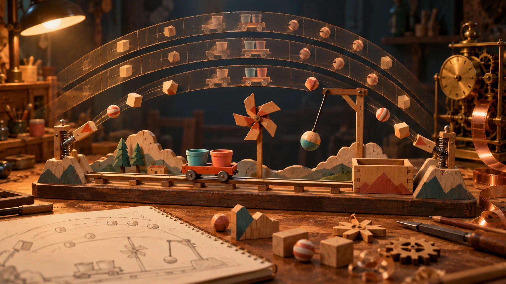

Boot and initialization
The boot sequence resets listed bodies, applies snapshots, attaches playback components and steps initialization physics before starting the level clock.
Balanstein / Ajax Studios
Record-and-replay physics in Unity
I built Balanstein’s recorded-physics gameplay architecture and the authoring tools that turn a designed scene into repeatable, playable acts.
My role Technical Team Lead at Ajax Studios · Architecture, implementation and engineering ownership

Balanstein is a cheerful 2.5D physics arcade game. Objects arrive from the left, right and middle; corner poles redirect the side arrivals through moving central obstacles. The player steers a cart underneath, catching positive objects and avoiding negative ones.
Uncontrolled differences between physics runs make authored difficulty harder to tune. I built Social Mode around a different workflow: record the authored motion once in the Editor, bake it into data, then replay that motion against a shared simulation clock.
The cart remains controlled by live input. The repeatability boundary covers recorded poses and tick-driven gameplay scheduling; cosmetic variation, UI and live player movement have their own responsibilities.
I built a pipeline that carries authored physics from level creation into runtime playback, including jointed structures and collision timing.
The recording system captures tick deltas, position, rotation and final rigidbody state. Playback can drive both a parent and its child bodies, which lets rope, robot and crocodile structures preserve the recorded relationship between their parts.
Mid-act snapshots carry body state and spline progress into a later act. Supporting tools stitch datasets and thin recordings, keeping the authoring pipeline useful beyond a single recording pass.
A fixed-step simulation clock provides pause, resume, reset and a speed multiplier. Listener registration is applied at tick boundaries, and a shared timeline base keeps scheduled events organized.
The boot sequence resets listed bodies, applies snapshots, attaches playback components and steps initialization physics before starting the level clock.
Each authored act supplies its object schedule, obstacle groups, cart structures, pole data and presentation cues to consumers in a defined order.
Shared timeline cursors coordinate object drops, central-element entrances and motion, cart-structure changes, pole transitions and four presentation-cue systems.
Collision ticks also drive object-category changes, giving authored motion and difficulty classification a common point of reference.
The kinematic cart uses momentum-based movement with Unity’s Input System and mobile touch controls. Generic, Hammer, Robot and Magnet structures are created once and switched by the authored schedule.
Polygon collection zones confirm a catch after several physics steps. Contact handling distinguishes side impacts from collection, while scoring coordinates positive and negative catches, lives, streaks and movement penalties.
Objects can change between positive, predictable-negative and unpredictable-negative categories at recorded collision moments. Player ranking determines which risk bands are reclassified.
Single-body and jointed obstacles support spline movement, rigidbody settings, scale, rotation and pose transitions. I extended Unity’s Splines animation component for fixed-step movement, rigidbody-driven motion and continuation from saved spline progress.
A scene-persistent data service stores currency, inventory and ranking information in local JSON, with gameplay systems using a dedicated data API.
A level is composed of authored acts. I implemented the checkpoint state machine, sequence runner and separate conductors that coordinate object resolution, obstacle choreography and progression between those acts.
Eight trigger points organize the transitions. Central-element sequences have four phases, with authored spline, scale, rotation, rigidbody-configuration and pose entries. Separating the controller from the conductors keeps the level flow and scene choreography independently understandable.
Designer tooling is a substantial part of the implementation: 18 custom inspectors, six editor windows and four property drawers. These tools support the broader Balanstein content workflow of approximately 800 levels.
Recording controls, playback assignment/removal, collision assignment, pole-drop timing, effect-source binding and unique object naming make recurring setup tasks explicit.
SerializeReference-based type selection supports authored transitions and sequences. Conditional and display-only drawers, validation and actionable errors help expose the relevant data.
InitializeOnLoad watchers maintain act lists and effect hosts. Reserialization and numbered duplication commands support consistent scene authoring.
System guides, complete level instructions and plain-language designer documentation explain how the pieces fit together.
VFX, animations, timed particles and sound cues are collected into tick-sorted timelines, with sequence numbers resolving events scheduled for the same tick. Cosmetic animation variants remain separate from the recorded gameplay boundary.
Pooled effects, animation cues, trails, collection flashes and MaterialPropertyBlocks provide feedback without creating a new material for every interaction.
Sound roles distinguish impacts, catches and misses. A separate resolver arbitrates contact-versus-collection audio, and joint-angle changes drive creak cues on articulated structures.
View navigation, fixed-aspect letterboxing, UI alignment and Cinemachine impulses support the playfield across displays. Cached yield instructions and reusable data buffers support mobile-conscious implementation.
Balanstein profiling covers CPU/GPU frame time, memory, garbage collection and rendering against a 30–60 FPS target on devices with 3 GB RAM.
Unity 6.3 LTS and C# form the core, with IL2CPP mobile targets, Unity Splines, Unity Mathematics, Input System/EnhancedTouch, TextMeshPro and Cinemachine. Tooling uses IMGUI, UI Toolkit, custom attributes and property drawers.
The runtime uses capability interfaces for clock dependents, act consumers, interactions, recordable objects and jointed bodies. ScriptableObjects hold authored data; shared timelines and separate gameplay/presentation responsibilities keep the implementation navigable.
The source snapshot contains 201 live C# files and approximately 23.8k non-comment lines. That figure describes active code in this subsystem, rather than counting fully commented files as delivered functionality.